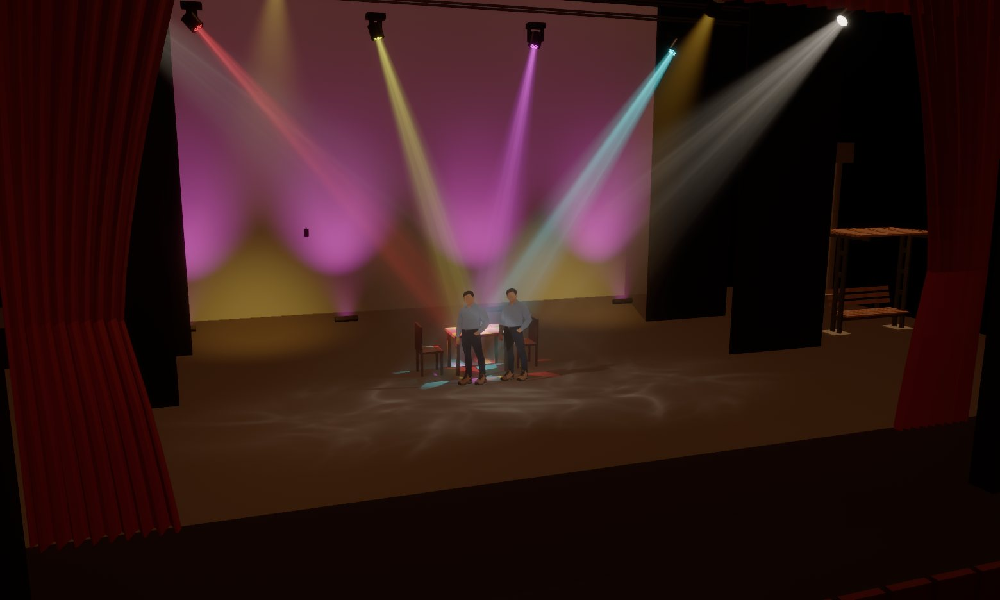

Erste Schritte
Tapetum mit BlinderKitten und IngeTrazo
Von der Installation bis zum Licht im Bühnenbild – Schritt für Schritt. Danach laufen alle drei Programme nebeneinander, und jede Änderung ist sofort zu sehen. Das Fenster „Erste Schritte“ in Tapetum führt dich durch dieselben Schritte.
From installing to light on your set – step by step. Afterwards all three programs run side by side, and every change shows at once. The “Getting started” window in Tapetum walks you through the same steps.
Teil 1 Installieren
- Tapetum herunterladen – auf der Startseite für dein System.
- macOS:
.dmgöffnen und Tapetum in Programme ziehen. Die App ist nicht signiert: Beim ersten Start warnt macOS. Dann unter Systemeinstellungen → Datenschutz & Sicherheit nach unten scrollen und Trotzdem öffnen klicken.
Windows: Installer ausführen (keine Administratorrechte nötig; warnt SmartScreen, Weitere Informationen → Trotzdem ausführen) oder die portable.zipentpacken. Fragt die Firewall, eingehendes UDP auf Port 6454 erlauben – darüber kommt das Art-Net.
Linux:.AppImageausführbar machen, oder.deb/.rpminstallieren. - BlinderKitten und – für das Bühnenbild – IngeTrazo installieren, falls noch nicht geschehen. Getestet mit BlinderKitten 1.0.1b98 und IngeTrazo 0.5.7.
- Tapetum starten: Beim ersten Start öffnet sich ein Beispiel – ein kleines Theater mit Lampen, Cues und Bühnenbild. So kannst du alles ausprobieren, ohne eigene Dateien anzulegen.
- Im Fenster Erste Schritte auf Beispiel speichern unter … klicken und einen Ordner wählen. Tapetum legt dort die Show
Tapetum-Demo.olga, das BühnenbildTapetum-Demo.igzund sein Projekt ab und öffnet das Beispiel von dort. Mit Im Dateimanager zeigen kommst du direkt zu den Dateien: Öffne die.olgamit BlinderKitten und die.igzmit IngeTrazo – weiter geht's in Teil 2.
- Download Tapetum – on the home page for your system.
- macOS: open the
.dmgand drag Tapetum to Applications. The app is unsigned: macOS warns on first launch. Then scroll down in System Settings → Privacy & Security and click Open Anyway.
Windows: run the installer (no administrator rights needed; if SmartScreen warns, More info → Run anyway) or unpack the portable.zip. If the firewall asks, allow incoming UDP on port 6454 – that's where Art-Net arrives.
Linux: make the.AppImageexecutable, or install the.deb/.rpm. - Install BlinderKitten and – for the set – IngeTrazo if you haven't yet. Tested with BlinderKitten 1.0.1b98 and IngeTrazo 0.5.7.
- Start Tapetum: the first time, an example opens – a small theatre with fixtures, cues and a set. So you can try everything without making files of your own.
- In the Getting started window, click Save the example to … and choose a folder. Tapetum puts the show
Tapetum-Demo.olga, the setTapetum-Demo.igzand its project there and opens the example from there. Show in file manager takes you straight to the files: open the.olgawith BlinderKitten and the.igzwith IngeTrazo – then carry on with part 2.
Teil 2 Mit BlinderKitten verbinden
- In BlinderKitten die Remote Control einschalten – einmalig, gilt für alle Shows: File → Preferences → OSC Remote Control → Enabled anhaken.
- Die Show in BlinderKitten öffnen – das Beispiel
Tapetum-Demo.olgaoder deine eigene, gespeicherte Show. Tapetum liest die.olga-Datei. - In Tapetum dieselbe
.olgaoffen haben: Beim gespeicherten Beispiel ist sie es schon. Deine eigene Show öffnest du unter ⚙ Einstellungen → Andere Show öffnen …; beim nächsten Start öffnet Tapetum sie von selbst. - Im Fenster Erste Schritte (oder links unter BlinderKitten) auf Tapetum-Interfaces in BK anlegen klicken. Tapetum legt für jedes DMX-Interface der Show ein Art-Net-Interface „Tapetum …“ auf
127.0.0.1an und spiegelt das Original per Pass-through dorthin. Patch und echte Hardware bleiben unverändert. BlinderKitten speichert und lädt die Show neu; eine Sicherung liegt als.olga.bakdaneben. - Eine Cue starten oder im Programmer einen Wert setzen – das Licht erscheint in Tapetum. Steht dort „Kein Signal von BlinderKitten“, zeigt Tapetum unter Erste Schritte, was zu prüfen ist.
- Turn on Remote Control in BlinderKitten – once, for all shows: File → Preferences → OSC Remote Control → tick Enabled.
- Open the show in BlinderKitten – the example
Tapetum-Demo.olgaor your own saved show. Tapetum reads the.olgafile. - Have the same
.olgaopen in Tapetum: with the saved example it already is. Open your own show under ⚙ Settings → Open another show …; next time Tapetum opens it by itself. - In the Getting started window (or on the left under BlinderKitten), click Add the Tapetum interfaces in BK. Tapetum adds an Art-Net interface “Tapetum …” on
127.0.0.1for every DMX interface of the show and mirrors the original to it with a pass-through. Patch and real hardware stay unchanged. BlinderKitten saves and reloads the show; a backup is left next to it as.olga.bak. - Run a cue or set a value in the programmer – the light appears in Tapetum. If it says “No signal from BlinderKitten”, Getting started shows what to check.
Teil 3 Lampen einrichten


- Lampen ohne Position in BlinderKitten stellt Tapetum automatisch in Reihen auf. Eine Lampe anklicken, dann an den Pfeilen ziehen (verschieben) oder an den Ringen (drehen). Drehen rastet in 15°-Schritten ein, mit gedrückter Shift-Taste frei.
- Tapetum trägt die Position live in BlinderKitten ein. Dort speichern, damit sie bleibt. Ist BK gerade nicht offen, merkt sich Tapetum die Position und überträgt sie später.
- Gruppen aus BK wählst du per Rechtsklick auf eine Lampe – praktisch, um eine ganze Traverse auf einmal zu verschieben.
- Gerätetyp anpassen (einmal pro Typ): Strahlwinkel bzw. Zoombereich, Lichtstrom, Farbrad, Goborad (eingebaute Muster oder eigene Bilder), LED-Anordnung, Pan/Tilt-Bereich. Pan/Tilt/Zoom-Bereiche schreibt Tapetum als „Physical range“ nach BK zurück. Mit Exportieren landet der Gerätetyp in deiner Gerätebibliothek (Ordner unter ⚙ Einstellungen (oben in der Seitenleiste)): Jedes neue Projekt mit einem Gerätetyp gleichen Namens übernimmt die Einstellungen automatisch.
- Fixtures without a position in BlinderKitten are lined up automatically. Click a fixture, then drag the arrows (move) or the rings (turn). Turning snaps in 15° steps, hold Shift to turn freely.
- Tapetum enters the position live in BlinderKitten. Save there to keep it. If BK isn't open, Tapetum remembers the position and sends it later.
- Groups from BK are selected with a right click on a fixture – handy for moving a whole truss at once.
- Tune the fixture type (once per type): beam angle or zoom range, lumens, colour wheel, gobo wheel (built-in patterns or your own pictures), LED layout, pan/tilt range. Tapetum writes pan/tilt/zoom ranges back to BK as “Physical range”. With Export the fixture type goes into your fixture library (folder under ⚙ Settings (top of the sidebar)): every new project with a fixture type of the same name takes the settings over automatically.
Teil 4 Bühnenbild aus IngeTrazo

- In IngeTrazo zeichnen wie gewohnt und als
.igzspeichern – am besten neben der Show-Datei. Die Vorderansicht von IngeTrazo ist die Zuschauersicht in Tapetum; Maße in Metern passen direkt zu den Lampenpositionen in BK. - In Tapetum unter Bühnenobjekte auf Importieren … klicken und die
.igzwählen. Jede Gruppe und Komponente wird ein eigenes Objekt; Materialien und Texturen kommen mit. Ein Exportschritt ist nicht nötig. - Beide Programme offen lassen: Arbeite einfach in IngeTrazo weiter. Nach jedem Speichern lädt Tapetum das Bühnenbild von selbst neu – du siehst sofort, wie das Licht auf die Änderung fällt. Tapetum verändert die
.igznie. - Materialien pro Objekt überschreiben, wenn nötig: Farbe, Reflexionsgrad, opak oder transluzent – zum Beispiel für Gaze, Glas oder Operafolie mit Schattenspiel von hinten.
- Draw in IngeTrazo as usual and save as
.igz– ideally next to the show file. IngeTrazo's front view is the audience view in Tapetum; measurements in metres match the fixture positions in BK directly. - In Tapetum, under Stage objects, click Import … and choose the
.igz. Every group and component becomes an object of its own; materials and textures come along. No export step needed. - Keep both programs open: just carry on in IngeTrazo. Each time you save, Tapetum reloads the set by itself – you see at once how the light falls on the change. Tapetum never changes the
.igz. - Override materials per object if needed: colour, reflectance, opaque or translucent – for gauze, glass or opera foil with shadow play from behind, for example.
Teil 5 Umbauten als Szenen

- Die Grundszene zeigt alles wie in den Dateien. Die Szenen hängen wie Lesezeichen von der oberen Bildschirmkante: Fährst du mit der Maus darüber, erscheinen alle, dazu + für eine neue. In einer Szene verschiebst, drehst oder versteckst du Objekte; ein Rechtsklick auf das Lesezeichen ändert Name, Cue und Übergang.
- Die Szene an eine Cue der Main-Cuelist koppeln. Läuft die Cuelist in BlinderKitten, zeigt Tapetum jeweils die Szene mit der höchsten Cue-ID bis zur aktuellen Cue – mit weichem Übergang.
- Ohne laufende Cuelist wählst du die Szene einfach von Hand. Klickst du während der Vorstellung eine andere an, zeigt Tapetum sie – als „nicht synchron mit BlinderKitten“ markiert – bis zum nächsten Cue, dann folgt es wieder der Cuelist.
- Im Beispiel: Fahr die Main-Cuelist in BlinderKitten durch. Bei Morgen verschwinden die Kisten, bei Fest rückt der Tisch in die Mitte und alles andere fährt auf die Seitenbühnen, beim Finale steht alles wieder an seinem Platz.
- The base scene shows everything as in the files. The scenes hang from the top edge of the screen like bookmarks: move the mouse there and all of them appear, with + for a new one. In a scene you move, turn or hide objects; a right click on its bookmark changes name, cue and transition.
- Bind the scene to a cue of the main cuelist. While the cuelist runs in BlinderKitten, Tapetum shows the scene with the highest cue ID up to the current cue – with a smooth transition.
- Without a running cuelist, just choose the scene by hand. Click another one while the show runs and Tapetum shows it – marked “not in step with BlinderKitten” – until the next cue, then follows the cuelist again.
- In the example: run through the main cuelist in BlinderKitten. At Morning the crates disappear, at Party the table moves centre stage and everything else goes off to the side stages, at the Finale everything is back in its place.
Tipps: Läuft es ruckelig, unter ⚙ Einstellungen (oben in der Seitenleiste) die Qualität „Niedrig“ wählen – gedacht für ältere Rechner und integrierte Grafik. Mit Cmd/Strg+Z machst du Änderungen rückgängig. Eine 3Dconnexion-SpaceMouse bewegt die Bühne und kann aktiv bleiben, während du BlinderKitten bedienst. Alle Einstellungen speichert Tapetum laufend in
<show>.tapetum neben der Show.Tips: If it stutters, choose quality “Low” under ⚙ Settings (top of the sidebar) – meant for older computers and integrated graphics. Cmd/Ctrl+Z undoes changes. A 3Dconnexion SpaceMouse moves the stage and can stay active while you operate BlinderKitten. Tapetum saves all settings as you go in
<show>.tapetum next to the show.